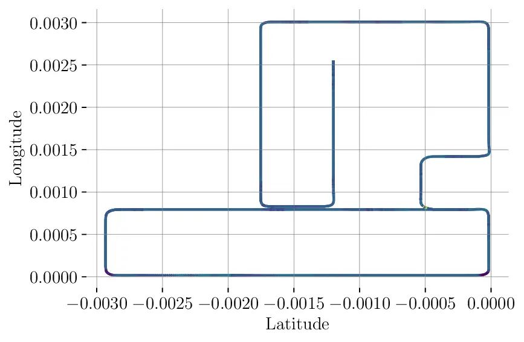
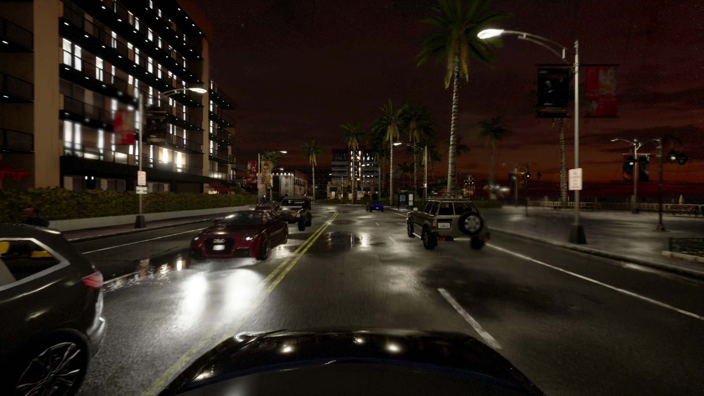

A CARLA-based benchmark dataset for video anomaly detection for autonomous vehicles
Anomaly detection is vital in autonomous driving, where unhandled edge cases can lead to catastrophic failures. However, current datasets lack realistic, diverse video anomaly scenarios with autonomous driving context for effective evaluation. We introduce the CarlAnomaly dataset, a new benchmark containing a wide range of well-annotated anomalies in realistic driving contexts, comparable in size and modality to existing autonomous driving datasets. Leveraging the dataset’s semantic segmentation masks, we explore extending segmentation-based anomaly detection from images to videos.
Allows to benchmark anomaly detection capabilities on the pixel/point level, the frame level, and the scenario level.
4 cameras (front, left, right, rear) with full HD images
Semantic Instance Segmentation Masks for each camera
Semantic LIDAR point clouds for each frame
Additional Sensors (IMU, GNSS, ...)
Example Video showing Cameras and Semantic LIDAR.
Sensor Setup
Sensor Setup
Instance Segmentation Masks
The dataset contains pixel- and instance wise segmentation masks for each object in the scene. Each object has a unique ID.
Since these annotations where generated in a simulation, the annotations are perfect.
Camera ImageInstance Segmentation MaskDepth Map
Camera ImageInstance Segmentation MaskDepth Map
Semantic LIDAR Point Clouds
Pixel-Anotated LIDAR Pointclouds for each frame with realistic settings.
We follow the KITTI-format.
LIDAR Example 1LIDAR Example 2
Additional Sensors
The dataset additionally contains sensor readings for the following sensors in CSV format:
IMU: Measuring acceleration and orientation of the ego vehicle
GNSS: Measuring position of the vehicle
Weather: Exact weather conditions
Example: IMU
The per-frame IMU readings look as follows:
index
acceleration_x
acceleration_y
acceleration_z
compass
longitude_x
longitude_y
longitude_z
0
-1.31
0.00
9.73
3.16
-0.00
-0.02
-0.01
1
5.58
-0.02
9.82
3.16
-0.00
-0.01
-0.00
2
5.90
-0.00
9.82
3.16
-0.00
-0.01
-0.00
3
6.19
-0.01
9.82
3.16
-0.00
-0.00
-0.00
4
5.90
-0.01
9.81
3.16
-0.00
-0.00
-0.00
5
4.71
-0.01
9.81
3.16
-0.00
0.00
-0.00
6
-0.01
-0.10
9.82
3.16
-0.00
0.01
-0.01
Example: GNSS

GNSS Coordinates in Matplotlib
Dataset Composition
Training Set
The training set consists of 2 extended drives through different maps of CARLA (town01, town05).
Validation Set
The validation set consists of an extended drive through town(03).
Test Set
The test set features 552 scenarios, each 20 seconds long, some of which contain anomalies.
Different Environmental Conditions
CarlAnomaly features a wide range of environmental conditions, including different times of day,
different environments (maps in CARLA), etc.
RainyNight

Sunset
Anomalies
CarlAnomaly features a wide range of anomalies.
Overall, there are x different types of anomalies:
Randomly appearing and disappearing unknown objects
Traffic Lights Malfunctioning in several ways (off, blinking single color, switching to fast)
Instantaneous weather changes
Spawning or vanishing objects
Spawning Anomalous Objects
Front CameraInstance-wise Segmentation Mask
Misbehaving Traffic Lights
Front CameraInstance-wise Segmentation Mask
Changing Weather
Front CameraInstance-wise Segmentation Mask
Flickering Street Lights
Front CameraInstance-wise Segmentation Mask
Download
Since the dataset is generated by a simulation, you are free to use it however you like.
We also provide the code that was used to generate the scenarios. This allows you to, for example, create a new version of the dataset with higher-resolution camera images or additional sensors, such as depth camera, dynamic vision sensor (DVS), or optical flow.
Code for training and evaluating your model on the benchmark is provided in this GitHub Repository.
The full dataset is 1.3T in size. Most of this is the LiDAR pointclouds.
You can download it from Academic Torrents or via https as described below.
Parts
The dataset can be downloaded in parts
Base - Front Camera + additional sensors (GNSS, IMU, Weather) + Anomaly Labels